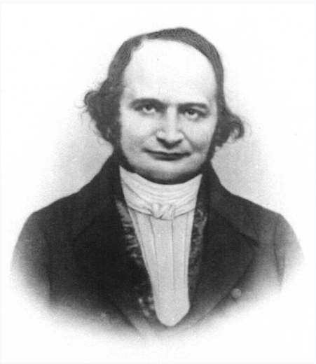

The Jacobian: The Mathematics of Local Transformations
From Carl Gustav Jacob Jacobi’s Discovery to the Change of Variables Theorem
Group: Hachimichimichi
Authors: Pang Kenwy, Teng Spoh, Lim Wey Jun, Lim Tau Shean (Photobomber)
The Jacobian
The Jacobian is one of the fundamental concepts in multivariable calculus. Unlike the ordinary derivative, which measures the rate of change of a function with respect to a single variable, the Jacobian provides a systematic way to describe how a transformation involving several variables changes locally. It plays a central role in coordinate transformations, multiple integration, differential geometry, mechanics, robotics and many other areas of mathematics.
Historical Background
The origins of the Jacobian can be traced back to the birth of differential calculus during the seventeenth century. At that time, Isaac Newton in England and Gottfried Wilhelm Leibniz in Germany independently developed differential calculus, introducing a systematic method for studying rates of change. Although their approaches differed, both laid the mathematical foundation upon which modern calculus was established.
Their work transformed mathematics by providing a rigorous framework for analysing functions of a single variable. Ordinary derivatives enabled mathematicians to describe velocity, acceleration, tangents, and optimisation problems with remarkable precision. For more than a century, differential calculus became one of the most powerful tools in mathematics and physics.
However, as scientific research expanded, mathematicians increasingly encountered problems involving several variables simultaneously. Questions arising in geometry, celestial mechanics, elasticity, and fluid dynamics could no longer be adequately described using only ordinary derivatives. These emerging challenges marked the beginning of a new stage in the development of calculus and ultimately motivated the search for a more general mathematical framework.
Carl Gustav Jacob Jacobi

Carl Gustav Jacob Jacobi (1804–1851) was one of the most influential German mathematicians of the nineteenth century. His research covered many branches of mathematics, including elliptic functions, differential equations, analytical mechanics, number theory, and multivariable analysis. Together with the Norwegian mathematician Niels Henrik Abel, Jacobi made major contributions to the theory of elliptic functions, laying important foundations for modern mathematical analysis.
Among Jacobi’s many achievements, one of the most significant was the introduction of the determinant associated with the matrix of first-order partial derivatives of a multivariable transformation. This quantity later became known as the Jacobian determinant. It measures how a transformation locally stretches, compresses, rotates, or distorts space, making it an indispensable tool for analysing coordinate transformations.
Rather than introducing an entirely new branch of mathematics, Jacobi developed a powerful mathematical language for describing differentiable mappings between multidimensional spaces. His ideas unified many concepts in calculus and provided a systematic framework for studying nonlinear transformations.
Today, the Jacobian matrix and Jacobian determinant are widely used in numerous disciplines. They play essential roles in the Change of Variables Theorem, optimisation, differential geometry, robotics, computer vision, machine learning, fluid dynamics, and engineering. More than 170 years after Jacobi’s work, these concepts continue to be fundamental tools in both theoretical mathematics and practical scientific applications.
The Mathematical Challenge
The development of mathematics has often been driven by the limitations of existing theories. Although ordinary derivatives provided an elegant description of functions involving a single variable, they became increasingly inadequate as mathematicians began to investigate higher-dimensional problems.
Consider a function of one variable,
\[ y=f(x), \]
where the derivative measures how the output changes with respect to a single input. This idea is sufficient for describing motion along a line or analysing simple curves. However, many real-world systems depend on several variables simultaneously. For example, the temperature of a material may depend on its position in three-dimensional space, while the motion of a robot depends on the coordinated movement of multiple joints. In such situations, a single derivative can no longer capture the complete behaviour of the system.
Mathematically, a multivariable transformation may be written as
\[ T:\mathbb{R}^{n}\rightarrow\mathbb{R}^{m}, \]
where each output variable depends on several input variables. To understand the local behaviour of such transformations, it is necessary to determine how every output changes with respect to every input simultaneously. This requirement naturally leads to a collection of first-order partial derivatives rather than a single derivative.
The search for a mathematical framework capable of describing these multidimensional relationships ultimately led to the development of the Jacobian matrix. By organising all first-order partial derivatives into a structured matrix, the Jacobian provides a complete local description of multivariable transformations. Its determinant further measures how these transformations locally stretch, compress, or reverse orientation, making it one of the most powerful concepts in multivariable calculus.
The Development of the Jacobian Matrix
The rapid development of mathematics during the eighteenth and nineteenth centuries presented new challenges that extended beyond the scope of classical differential calculus. While the ordinary derivative successfully described the rate of change of a function with respect to a single variable, many scientific problems involved transformations between several variables. Applications in geometry, mechanics, astronomy, and mathematical physics required a mathematical framework capable of analysing how multiple quantities changed simultaneously.
Recognising this limitation, Carl Gustav Jacob Jacobi sought to generalise the concept of differentiation to multivariable functions. Instead of considering only one derivative, he examined how every output variable depends on every input variable. This approach led him to organise all first-order partial derivatives into a rectangular array, which later became known as the Jacobian matrix. His construction provided a systematic method for describing the local behaviour of multivariable transformations.
Suppose that a transformation
\[ \mathbf{F}:\mathbb{R}^{n}\rightarrow\mathbb{R}^{m} \]
is defined by
\[ \mathbf{F}(x_1,x_2,\ldots,x_n) = \left( f_1(x_1,\ldots,x_n), f_2(x_1,\ldots,x_n), \ldots, f_m(x_1,\ldots,x_n) \right). \]
Each output function generally depends on several input variables. To understand how the transformation behaves locally, it is necessary to determine how each output changes with respect to every input. This information is obtained by computing the first-order partial derivatives and arranging them into a matrix,
\[ J_{\mathbf{F}} = \begin{bmatrix} \dfrac{\partial f_1}{\partial x_1} & \dfrac{\partial f_1}{\partial x_2} & \cdots & \dfrac{\partial f_1}{\partial x_n} \\[1.2ex] \dfrac{\partial f_2}{\partial x_1} & \dfrac{\partial f_2}{\partial x_2} & \cdots & \dfrac{\partial f_2}{\partial x_n} \\ \vdots & \vdots & \ddots & \vdots \\ \dfrac{\partial f_m}{\partial x_1} & \dfrac{\partial f_m}{\partial x_2} & \cdots & \dfrac{\partial f_m}{\partial x_n} \end{bmatrix}. \]
This matrix is called the Jacobian matrix. Each row corresponds to one output function, while each column represents differentiation with respect to one input variable. Consequently, the Jacobian matrix contains all first-order partial derivatives required to describe the local behaviour of the transformation.
The Scaling Factor: Demystifying the Jacobian Determinant
While the Jacobian matrix provides a structured way to organize partial derivatives, its associated scalar value, the Jacobian determinant, offers a profound geometrical insight to demystify how spaces change. To intuitively grasp this concept, one can consider the classical cartographic problem of mapping a three-dimensional globe onto a two-dimensional piece of paper. In such multivariable transformations, the original coordinate grid is inevitably stretched, squashed, or sheared.
The Jacobian determinant serves simply as the fundamental conversion factor for this distortion. It measures exactly how much the area or volume changes locally near a specific point. If a mathematical transformation doubles the size of every tiny shape within a region, the Jacobian determinant at that point is exactly 2. This precise scaling factor ensures that complex multivariable calculations, such as evaluating multiple integrals, remain perfectly accurate across different coordinate systems.
To illustrate this clearly, consider the common transformation from polar coordinates \((r, \theta)\) to Cartesian coordinates \((x, y)\). The transformation equations are given by: \[x = r \cos \theta\] \[y = r \sin \theta\]
To find the scaling factor of this transformation, we compute the Jacobian matrix, \(J\), by arranging the first-order partial derivatives: \[J = \begin{bmatrix} \frac{\partial x}{\partial r} & \frac{\partial x}{\partial \theta} \\ \frac{\partial y}{\partial r} & \frac{\partial y}{\partial \theta} \end{bmatrix} = \begin{bmatrix} \cos \theta & -r \sin \theta \\ \sin \theta & r \cos \theta \end{bmatrix}\]
The Jacobian determinant is the determinant of this matrix: \[\det(J) = (\cos \theta)(r \cos \theta) - (-r \sin \theta)(\sin \theta) = r(\cos^2 \theta + \sin^2 \theta) = r\]
This mathematical result, \(r\), tells a clear physical story. It means that the amount of stretching directly depends on the distance from the origin. A small grid near the origin (where \(r\) is small) undergoes very little scaling. However, a grid situated far from the origin (where \(r\) is large) is stretched significantly more. Without this determinant acting as a conversion factor, calculating areas in polar coordinates would yield completely incorrect results.
From Abstract Theory to the Modern World: The Plot Twist
The narrative of the Jacobian matrix features a remarkable historical plot twist: the leap from nineteenth-century blackboards to the modern digital age. For over a century, Jacobi’s elegant theoretical formulas largely lay dormant. They were confined to the realm of pure mathematics, studied primarily by scholars interested in abstract concepts like elliptic functions and analytical mechanics. During his lifetime, Jacobi could never have imagined the sheer computational power that would one day exist.
However, the advent of high-speed computers in the twentieth century transformed these historical equations into the crucial backbone of contemporary computational sciences. Computers are incredibly efficient at solving linear equations, but they struggle to process complex non-linear problems directly. The Jacobian matrix solves this dilemma by acting as the ultimate tool for linear approximation. It allows computational software to take a highly complex, non-linear system and approximate its behaviour locally as a simple linear system.
Today, the practical applications of Jacobi’s work extend far beyond the imagination of early mathematicians. For example, aerospace engineers actively rely on these principles to simulate complex fluid dynamics, such as modelling the flow of air over an aeroplane wing. To do this, they divide the continuous space around the wing into a massive three-dimensional mesh of tiny computational grids. The Jacobian matrix is applied at every single grid point to calculate exactly how physical quantities, such as air pressure and wind velocity, distort and transition from one grid cell to the next.
Furthermore, modern Artificial Intelligence is fundamentally dependent on the Jacobian framework. When training a neural network, a computer must continually adjust millions of interconnected weights to minimise output errors. This adjustment process, known as backpropagation, relies entirely on the multivariable chain rule. In this context, the Jacobian matrix systematically stores all the necessary partial derivatives, tracking exactly how a tiny adjustment in one specific weight will impact the final error rate. Thus, Jacobi’s historical quest to generalise calculus ultimately provided the exact mathematical language required to power today’s most advanced technologies.
Interactive Jacobian
The interactive demonstrates the transformation from polar coordinates \((r,\theta)\) to Cartesian coordinates,
\[ T(r,\theta)= \begin{pmatrix} r\cos\theta\\ r\sin\theta \end{pmatrix}. \]
The corresponding Jacobian matrix is
\[ J(r,\theta)= \begin{bmatrix} \cos\theta & -r\sin\theta\\ \sin\theta & r\cos\theta \end{bmatrix}, \]
with determinant
\[ \det(J)=r. \]
evaluated at the selected point.